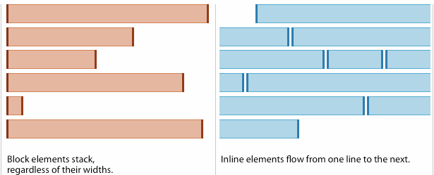

HTML i CSS
L'HTML diu què és cada cosa; el CSS diu com s'ha de veure.
Què sabràs fer en acabar
- Distingir el paper de l'HTML i el del CSS.
- Escriure l'esquelet d'un document HTML5 amb etiquetes semàntiques.
- Aplicar estils amb selectors d'etiqueta, de classe i d'identificador.
- Diferenciar elements de bloc i elements en línia.
- Saber on posar el CSS per personalitzar un tema d'un gestor de continguts.
És una presentació pensada per entendre el que genera un gestor de continguts. La disposició de la pàgina i les webs fetes a mà es treballen al RAX, material complementari.
Estructura i presentació, per separat
HTML és un llenguatge de marques: envolta el contingut amb etiquetes que diuen què és cada cosa, un títol, un paràgraf, un enllaç. No diu com es veu.
CSS és el llenguatge d'estils: colors, tipus de lletra, espais i disposició. Separar-los permet canviar tot l'aspecte d'un lloc sense tocar el contingut, i és exactament el que fa un tema de WordPress o de Moodle.
| HTML | CSS | |
|---|---|---|
| Respon | Què és aquest element? | Com s'ha de veure? |
| Tipus | Llenguatge de marques | Full d'estils |
| Exemple | <h1>Benvinguts</h1> | h1 { color: navy; } |
L'esquelet d'un document
<!DOCTYPE html> <html lang="ca"> <head> <meta charset="UTF-8"> <meta name="viewport" content="width=device-width, initial-scale=1"> <title>Títol de la pestanya</title> <link rel="stylesheet" href="styles.css"> </head> <body> <!-- contingut visible --> </body> </html>
| Peça | Funció |
|---|---|
<!DOCTYPE html> | Declara HTML5 |
lang="ca" | Idioma: ajuda els lectors de pantalla i els cercadors |
<head> | Metadades, títol i enllaç al CSS; no es veu |
viewport | Imprescindible perquè es vegi bé al mòbil |
<body> | Tot el que es mostra |
Etiquetes que més faràs servir
| Etiqueta | Serveix per |
|---|---|
<h1>…<h6> | Títols per nivells; un sol h1 per pàgina |
<p> | Paràgraf |
<strong> · <em> | Text important · èmfasi |
<ul> · <ol> · <li> | Llista sense ordre · ordenada · element |
<a href="…"> | Enllaç |
<img src="…" alt="…"> | Imatge; alt és obligatori |
<table> · <tr> · <th> · <td> | Taula de dades |
<form> · <label> · <input> | Formulari |
<header> · <nav> · <main> | Capçalera · navegació · contingut principal |
<section> · <article> · <footer> | Secció · peça independent · peu |
Com s'escriu una regla CSS
selector {
propietat: valor;
}
| Selector | Exemple | S'aplica a |
|---|---|---|
| D'etiqueta | p { color: #333; } | Tots els <p> |
| De classe | .destacat { … } | Els elements amb class="destacat" |
| D'identificador | #capcalera { … } | L'únic element amb id="capcalera" |
El CSS pot anar en línia (style="…"), intern (<style> al head) o extern (styles.css enllaçat). L'extern és el bo: un sol fitxer serveix per a totes les pàgines. Si dues regles xoquen, guanya la més específica: identificador sobre classe, classe sobre etiqueta.
Elements de bloc i elements en línia
| Bloc | En línia | |
|---|---|---|
| Exemples | div, p, h1, section, ul | span, a, strong, img, code |
| Ocupa | Tota l'amplada disponible | Només el que necessita |
| Comença | En una línia nova | A continuació del que hi ha |
width i height | Funcionen | S'ignoren |
| Pot contenir | Blocs i elements en línia | Només elements en línia |

La propietat display ho canvia: inline-block es col·loca en línia però accepta mides, i és el truc clàssic per a un menú horitzontal.
Un menú horitzontal
<nav> <a href="#" class="menu">Inici</a> <a href="#" class="menu">Serveis</a> <a href="#" class="menu">Contacte</a> </nav>
.menu {
display: inline-block;
width: 120px;
padding: 10px 0;
text-align: center;
background: #e3f2fd;
text-decoration: none;
}
.menu:hover { background: #bbdefb; }
El CSS addicional d'un tema
Als gestors de continguts no s'edita el fitxer del tema: la pròxima actualització el trepitjaria. WordPress té un apartat de CSS addicional i Moodle un camp de SCSS en brut on s'afegeixen regles pròpies. Són les mateixes regles d'aquesta pàgina, aplicades sobre les classes que el tema ja posa a l'HTML.
Inspeccionar qualsevol pàgina
Clic dret sobre un element i Inspecciona: veuràs a l'esquerra l'HTML i a la dreta les regles CSS que s'hi apliquen. Pots canviar un valor i veure l'efecte a l'instant, sense tocar cap fitxer. És la manera de trobar la classe que has de fer servir al CSS addicional d'un tema.
Criteris professionals
- Fes servir etiquetes pel que signifiquen, no per com es veuen.
- Posa sempre
alta les imatges ilabelals camps. - CSS en fitxer extern, i classes millor que identificadors.
- Valida l'HTML amb el validador del W3C.
- No edites els fitxers d'un tema: fes servir el CSS addicional o un tema fill.
Errors habituals
- L'estil no s'aplica
-
Causa La ruta de
<link href>no és correcta, o el selector no coincideix amb la classe.Solució Mira a la pestanya Xarxa si
styles.cssdona 404 i, a l'inspector, quines regles arriben a l'element. widthno fa res-
Causa L'element és en línia.
Solució Canvia-li el
displayablockoinline-block. - Un
<div>dins d'un<span> -
Causa Un element en línia no pot contenir un bloc.
Solució Canvia el contenidor per un element de bloc.
Resum
- HTML: estructura i significat. CSS: aspecte.
- Tot document té
doctype,html,headibody. - Selectors d'etiqueta, de classe (
.) i d'identificador (#). - Bloc: ocupa l'amplada i admet mides. En línia: només el seu contingut.
- Als gestors de continguts, el CSS propi va al CSS addicional del tema.
Comprova el que has après
<p class="avis">?Al currículum
Contingut 1.3 Utilització de la interfície gràfica. Personalització de l'entorn. Funcionalitats proporcionades pel gestor de continguts. Sindicació.
CA 1.3 Personalitza la interfície del gestor de continguts.